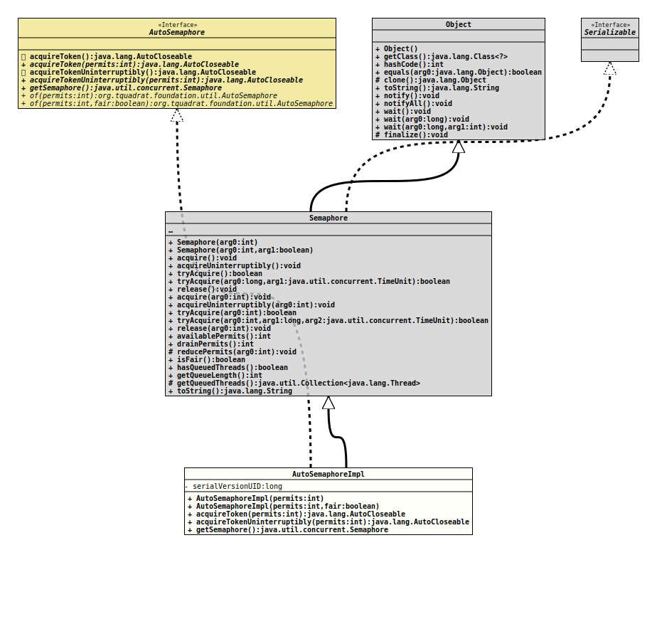

Class AutoSemaphoreImpl
- All Implemented Interfaces:
Serializable,AutoSemaphore
The implementation of
AutoSemaphore.
- Author:
- Thomas Thrien (thomas.thrien@tquadrat.org)
- Version:
- $Id: AutoSemaphoreImpl.java 1135 2024-05-28 21:32:48Z tquadrat $
- Since:
- 0.4.8
- See Also:
- UML Diagram
-

UML Diagram for "org.tquadrat.foundation.util.internal.AutoSemaphoreImpl"
{kind=link}
-
Nested Class Summary
Nested ClassesModifier and TypeClassDescriptionprivate final classThe token that holds the permits to be released when atry-with-resourcesblock is left. -
Constructor Summary
ConstructorsConstructorDescriptionAutoSemaphoreImpl(int permits) Creates anAutoSemaphoreImplinstance with the given number of permits and non-fair fairness setting.AutoSemaphoreImpl(int permits, boolean fair) Creates anAutoSemaphoreImplinstance with the given number of permits and the given fairness setting. -
Method Summary
Modifier and TypeMethodDescriptionfinal AutoCloseableacquireToken(int permits) Acquires the given number of permits from this semaphore, blocking until all are available, or the thread is interrupted, and returns a token object that is used fortry-with-resources.final AutoCloseableacquireTokenUninterruptibly(int permits) Acquires the given number of permits from this semaphore, blocking until all are available, and returns a token object that is used fortry-with-resources.final SemaphoreReturns a reference to the raw semaphore.Methods inherited from class java.util.concurrent.Semaphore
acquire, acquire, acquireUninterruptibly, acquireUninterruptibly, availablePermits, drainPermits, getQueuedThreads, getQueueLength, hasQueuedThreads, isFair, reducePermits, release, release, toString, tryAcquire, tryAcquire, tryAcquire, tryAcquireMethods inherited from class java.lang.Object
clone, equals, finalize, getClass, hashCode, notify, notifyAll, wait, wait, waitMethods inherited from interface org.tquadrat.foundation.util.AutoSemaphore
acquireToken, acquireTokenUninterruptibly
-
Constructor Details
-
AutoSemaphoreImpl
Creates anAutoSemaphoreImplinstance with the given number of permits and non-fair fairness setting.- Parameters:
permits- The initial number of permits available. This value may be negative, in which case releases must occur before any acquires will be granted.
-
AutoSemaphoreImpl
Creates anAutoSemaphoreImplinstance with the given number of permits and the given fairness setting.- Parameters:
permits- The initial number of permits available. This value may be negative, in which case releases must occur before any acquires will be granted.fair-trueif this semaphore will guarantee first-in first-out granting of permits under contention, elsefalse.
-
-
Method Details
-
acquireToken
public final AutoCloseable acquireToken(int permits) throws InterruptedException, IllegalArgumentException Acquires the given number of permits from this semaphore, blocking until all are available, or the thread is interrupted, and returns a token object that is used for
try-with-resources.Acquires the given number of permits, if they are available, and returns immediately, reducing the number of available permits by the given amount. This method atomically acquires the permits all at once.
If insufficient permits are available then the current thread becomes disabled for thread scheduling purposes and lies dormant until one of two things happens:
- Some other thread invokes one of the
release()methods for this semaphore and the current thread is next to be assigned permits and the number of available permits satisfies this request; or - Some other thread interrupts the current thread.
If the current thread:
- has its interrupted status set on entry to this method; or
- is interrupted while waiting for a permit,
then an
InterruptedExceptionis thrown and the current thread's interrupted status is cleared. Any permits that were to be assigned to this thread are instead assigned to other threads trying to acquire permits, as if permits had been made available by a call torelease().- Specified by:
acquireTokenin interfaceAutoSemaphore- Parameters:
permits- The number of permits to acquire.- Returns:
- The token.
- Throws:
InterruptedException- The current thread is interrupted.IllegalArgumentException- The given number of permits to acquire is negative.
- Some other thread invokes one of the
-
acquireTokenUninterruptibly
Acquires the given number of permits from this semaphore, blocking until all are available, and returns a token object that is used for
try-with-resources.Acquires the given number of permits, if they are available, and returns immediately, reducing the number of available permits by the given amount. This method atomically acquires the permits all at once.
If insufficient permits are available then the current thread becomes disabled for thread scheduling purposes and lies dormant until some other thread invokes one of the
release()methods for this semaphore and the current thread is next to be assigned permits and the number of available permits satisfies this request.If the current thread is interrupted while waiting for permits then it will continue to wait and its position in the queue is not affected. When the thread does return from this method its interrupt status will be set.
- Specified by:
acquireTokenUninterruptiblyin interfaceAutoSemaphore- Parameters:
permits- The number of permits to acquire.- Returns:
- The token.
- Throws:
IllegalArgumentException- The given number of permits to acquire is negative.
-
getSemaphore
Returns a reference to the raw semaphore.- Specified by:
getSemaphorein interfaceAutoSemaphore- Returns:
- The semaphore.
-